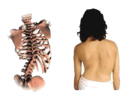

Tudo sobre a coluna vertebral.

Por vezes existem desvios da coluna que se devem a maus hábitos posturais a que se dá o nome de atitude escoliótica. A atitude escoliótica é corrigida corrigindo a postura e os maus hábitos posturais. No entanto isso requer tempo e muita vontade tal como exercícios por forma a corrigir a atitude escoliótica.
A escoliose pode aparecer em qualquer idade mas ela acentua-se com o crescimento ou seja desenvolve-se ou aumenta com o crescimento e com as más posturas, sendo muitas das vezes as más posturas uma boa indicação de que algo não está bem com o corpo.
A nível médico: A nível médico as soluções passam pelo uso de coletes ou mesmo pelo uso da cirurgia nos casos mais avançados ou que não reagem ao uso do colete.Escusado será dizer que a cirurgia é sempre um método invasivo e que deveria ser evitado sempre que possível.
Quanto ao colete, para além do desconforto que ele provoca, pode ser causa de problemas emocionais sobretudo em crianças e adolescentes que se podem sentir inferiores devido ao seu uso.
A nível de fisioterapia podem-se usar várias abordagens para ajudar a corrigir a escoliose, sendo um dos métodos que melhor consegue resolver essa patologia. Pode-se juntar a natação e algumas secções de relaxamento, alongamentos e fortalecimento muscular.
Outras abordagens podem incluir massagem, osteopatia, quiroprática, e muitas outras abordagens ou terapias.
Uma vez que as causas da escoliose podem ser muitas, há que as saber detectar e corrigir.
Infelizmente os meios de diagnóstico passam quase sempre pelo uso do raio X e pela visualização da coluna. As causas da escoliose não são detectáveis nos exames médicos actualmente disponíveis.
Todos os exames, vêm apenas as consequências. E ver apenas as consequências não permite ver nem tratar as causas.
Infelizmente só pessoas treinadas e com boa sensibilidade conseguem detectar e corrigir muitas das causas da escoliose tal como as causas de muitos outros problemas.